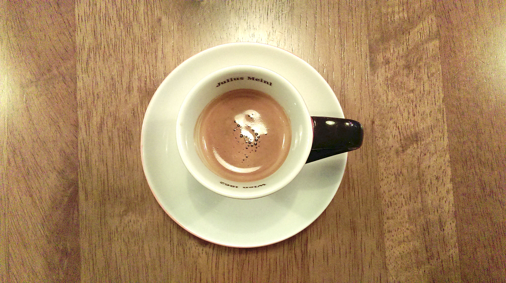
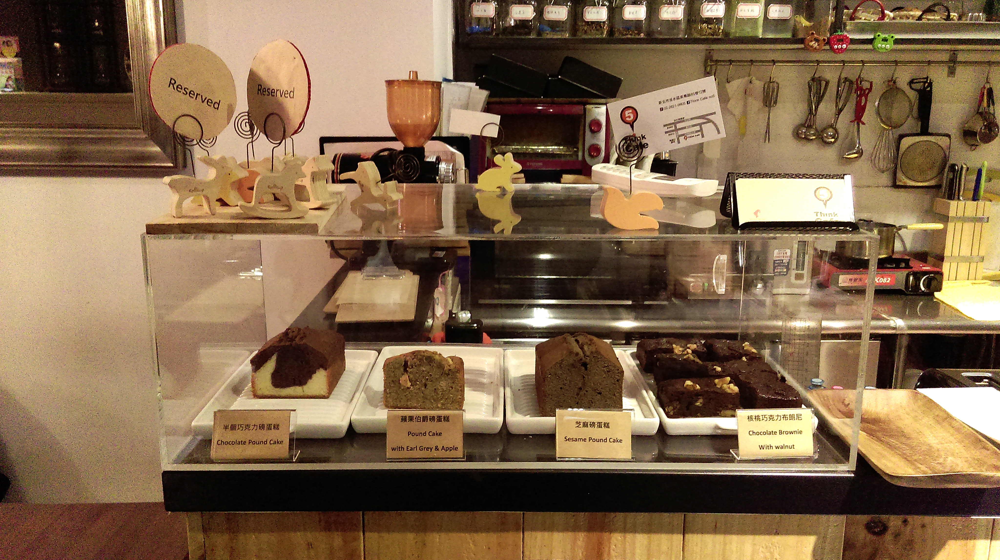
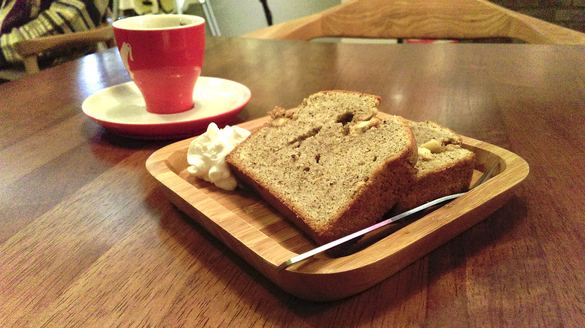
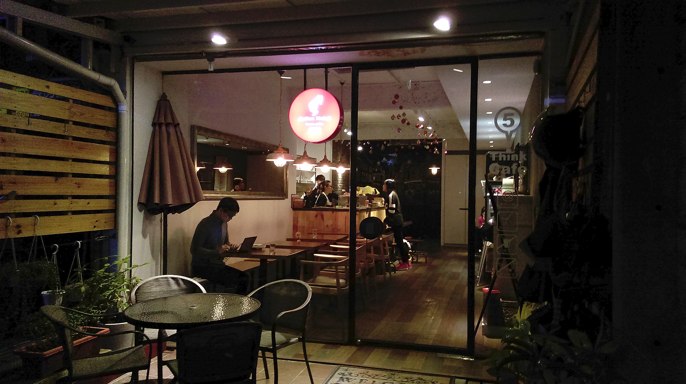

Think Cafe No5 使用的是維也納咖啡品牌-Julius Meinl的豆子，1862年起家，現在已經傳承到第五代了。Espresso喝起來溫醇順口，不會太濃郁，口味偏酸、帶些甘甜。去年咖啡展時也有不少國外品牌的咖啡豆商參展，尤其是義大利、來的還不少。有的參展廠商還只許店家試喝、不開放給一般民眾試喝呢。想必國外廠商是看多台灣咖啡市場的發展才會來試試水溫。
Think Cafe No5位於英專路上的巷弄裡，不會太難找。店內約有二十幾個座位，裝潢簡潔溫馨。
吧台上陳列的磅蛋糕、小冰箱裡的乳酪蛋糕都是店家自己做的。他們的蛋糕還可以線上訂購喔，詳洽店家Facebook粉絲專頁。

點了一份伯爵蘋果口味的磅蛋糕，一份70元 (2 slices)。
端上來的蛋糕有稍微加溫烤過，入口時有茶香氣，外皮酥軟、內部綿密紮實、甜度適中，很好吃！
店家菜單：除了有許多品項的咖啡、茶類，也有不少點心供選擇，三明治、鬆餅、蛋糕等。價位適中。很適合來個悠閒的午茶呢。

地址：新北市淡水區英專路65巷12號
電話：02 2621 9905